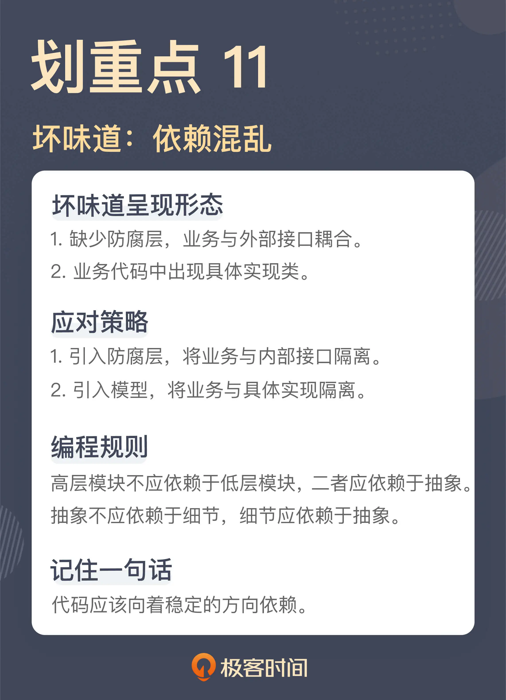

- 00 开篇词 这一次，我们从“丑”代码出发.md
- 01 缺乏业务含义的命名：如何精准命名？.md
- 02 乱用英语：站在中国人的视角来看英文命名.md
- 03 重复代码：简单需求到处修改，怎么办？.md
- 04 长函数：为什么你总是不可避免地写出长函数？.md
- 05 大类：如何避免写出难以理解的大类？.md
- 06 长参数列表：如何处理不同类型的长参数？.md
- 07 滥用控制语句：出现控制结构，多半是错误的提示.md
- 08 缺乏封装：如何应对火车代码和基本类型偏执问题？.md
- 09 可变的数据：不要让你的代码“失控”.md
- 10 变量声明与赋值分离：普通的变量声明，怎么也有坏味道？.md
- 11 依赖混乱：你可能还没发现问题，代码就已经无法挽救了.md
- 12 不一致的代码：为什么你的代码总被吐槽难懂？.md
- 13 落后的代码风格：使用“新”的语言特性和程序库升级你的代码.md
- 14 多久进行一次代码评审最合适？.md
- 15 新需求破坏了代码，怎么办？.md
- 16 熊节：什么代码应该被重构？.md
- 17 课前作业点评：发现“你”代码里的坏味道.md
- 结束语 写代码是一件可以一生精进的事.md
11 依赖混乱：你可能还没发现问题，代码就已经无法挽救了
你好，我是郑晔。
我们前面已经讲了许多坏味道，无论是你很容易接受的，还是挑战你编程习惯的，它们都有相对直观的表现形式，属于你很容易一下子就看出来问题的。这一讲，我们要讲的坏味道就不属于一下子就能看出来的，需要你稍微仔细一点看代码才会发现问题，那就是依赖关系。
我前面在讲“大类”这个坏味道的时候曾经说过，为了避免同时面对所有细节，我们需要把程序进行拆分，分解成一个又一个的小模块。但随之而来的问题就是，我们需要把这些拆分出来的模块按照一定的规则重新组装在一起，这就是依赖的缘起。
一个模块要依赖另外一个模块完成完整的业务功能，而到底怎么去依赖，这里就很容易产生问题。
缺少防腐层
我们还是先来看一段代码：
@PostMapping("/books")
public NewBookResponse createBook(final NewBookRequest request) {
boolean result = this.service.createBook(request);
...
}
这段代码是创建一部作品的入口，也就是说，它提供了一个 REST 服务，只要我们对 /books 这个地址发出一个 POST 请求，就可以创建一部作品出来。那么，这段代码有问题吗？
按照一般代码的分层逻辑，一个 Resource （有的团队称之为 Controller）调用一个 Service，这符合大多数人的编程习惯，所以看起来，这段代码简直是正常得不能再正常了，这能有什么问题？
从 Resource 调用 Service，这几乎是行业里的标准做法，是没有问题的，但问题出在传递的参数上。请问，这个 NewBookRequest 的参数类应该属于哪一层，是 resource 层，还是 service 层呢？
一般来说，既然它是一个请求参数，通常要承载着诸如参数校验和对象转换的职责，按照我们通常的理解，它应该属于 resource 层。如果这个理解是正确的，问题就来了，它为什么会传递给 service 层呢？
按照通常的架构设计原则，service 层属于我们的核心业务，而 resource 层属于接口。二者相较而言，核心业务的重要程度更高一些，所以，它的稳定程度也应该更高一些。同样的业务，我们可以用 REST 的方式对外提供，也可以用 RPC 的方式对外提供。
说到这，你就会发现一个问题，NewBookRequest 这个本来应该属于接口层的参数，现在成了核心业务的一部分，也就是说，即便将来我们提供了 RPC 的接口，它也要知道 REST 的接口长什么样子，显然，这是有问题的。
既然 NewBookRequest 属于 resource 层是有问题的，那我们假设它属于 service 层呢？正如我们前面所说，一般请求都要承担对象校验和转化的工作。如果说这个类属于 service 层，但它用在了 resource 的接口上，作为 resource 的接口，它会承载一些校验和对象转换的角色，而 service 层的参数是不需要关心这些的。如果 NewBookRequest 属于 service 层，那校验和对象转换的职责到底由谁来完成呢？
还有更关键的一点是，有时候 service 层的参数和 resource 层的参数并不是严格地一一对应。比如，创建作品时，我们需要一个识别作者身份的用户 ID，而这个参数并不是通过客户端发起的请求参数带过来，而是根据用户登录信息进行识别的。所以，用 service 层的参数做 resource 层的参数，就存在差异的参数如何处理的问题。
你有没有发现，我们突然陷入了一种两难的境地，如此一个简单的参数，放到哪个层里都有问题。
这是一种非常常见的代码，你去翻看自己的代码仓库，也许就能找到类似的代码。不过，很有可能在学习到这一课之前，你根本没有想过这种代码也是有问题的。
那这个问题该如何解呢？
其实，之所以我们这么纠结，一个关键点在于，我们缺少了一个模型。
NewBookRequest 之所以弄得如此“里外不是人”，主要就是因为它只能扮演一个层中的模型，所以，我们只要再引入一个模型就可以破解这个问题。
class NewBookParameter {
...
}
class NewBookRequest {
public NewBookParameters toNewBookRequest() {
...
}
}
@PostMapping("/books")
public NewBookResponse createBook(final NewBookRequest request) {
boolean result = this.service.createBook(request.toNewBookParameter());
...
}
这里我们引入了一个 NewBookParameter 类，把它当作 service 层创建作品的入口，而在 resource 中，我们将 NewBookRequest 这个请求类的对象转换成了 NewBookParameter 对象，然后传到 service 层。
在这个结构中，NewBookParameter 属于 service 层，而 NewBookRequest 属于 resource 层，二者相互独立，我们之前纠结的问题也就不复存在了。
好，现在我们理解了，通过增加一个模型，我们就破解了依赖关系上的纠结。
也许你会说，虽然它们成了两个类，但是，它们两个应该长得一模一样吧。这算不算是一种重复呢？但我的问题是，它们两个为什么要一样呢？有了两层不同的参数，我们就可以给不同层次上的模型以不同的约定了。
比如，对于 resource 层的请求对象，因为它的主要作用是传输，所以，一般来说，我们约定请求对象的字段主要是基本类型。而 service 的参数对象，因为它已经是核心业务的一部分，就需要全部转化为业务对象。举个例子，比如，同样表示价格，在请求对象中，我们可以是一个 double 类型，而在业务参数对象中，它应该是 Price 类型。
我们再来解决 resource 层参数和 service 层参数不一致的情况，现在二者分开了，那我们就很清楚地知道，其实，就是在业务参数对象构造的时候，传入必需的参数即可。比如，如果我们需要传入 userId，可以这么做：
class NewBookRequest {
public NewBookParameters toNewBookRequest(long userId) {
...
}
}
@PostMapping("/books")
public NewBookResponse createBook(final NewBookRequest request, final Authentication authentication) {
long userId = getUserIdentity(authentication);
boolean result = this.service.createBook(request.toNewBookParameter(userId));
...
}
我们之所以能注意到这个坏味道，就是从依赖关系入手发现的问题。我当初注意到这段代码，因为我团队内部的约定是，所有的请求对象都属于 resource 层，但在这段代码里，service 层出现了 resource 层的对象，它背离了我们对依赖关系设计的约定，所以，这个问题就浮出了水面。
实际上，这个问题也是一个典型的软件设计问题：缺少防腐层。我在《[10x 程序员工作法]》和《[软件设计之美]》两个专栏都讲到过防腐层的概念，只不过，讲防腐层的时候，我举的例子都是与外部系统集成，其中的观点就是通过防腐层将外部系统和核心业务隔离开来。
而很多人初见这个例子，可能压根想不到它与防腐层的关系，那只不过是因为你对这种结构太熟悉了。其实，resource 层就是外部请求和核心业务之间的防腐层。只要理解了这一点，你就能理解这里要多构建出一个业务参数对象的意义了。那下面这段代码，想必你也能轻易地发现问题：
@Entity
@Table(name = "user")
@JsonIgnoreProperties(ignoreUnknown = true)
class User {
...
}
这是一个 User 类的声明，它有 @Entity 这个 Anntation，表示它是一个业务实体的对象，但它的上面还出现了 @JsonIgnoreProperties，这是就是处理 JSON 的一个 Annotation。JSON 会在哪用到，通常都是在传输中。业务实体和传输对象应该具备的特质在同一个类中出现，显然，这也是没有构建好防腐层的结果，把两个职责混在了一起。
业务代码里的具体实现
好，我们再来看一段代码：
@Task
public void sendBook() {
try {
this.service.sendBook();
} catch (Throwable t) {
this.feishuSender.send(new SendFailure(t)));
throw t;
}
}
这是我们在“[重复代码]”那一讲中提到的一个发送作品信息的函数，这里的重点在于，一旦发送过程出了问题，要通过即时通信工具发送给相关人等，以防系统出现问题无人发觉。只不过，这里给出的是它最初的样子，也就是通过飞书进行消息发送。
因为需求是通过飞书发送，所以，这里就写了飞书发送。这看上去简直是一个合理得不能再合理的做法了。
但是，请稍等！这是一种符合直觉的做法，然而，它却不符合设计原则，它违反了依赖倒置原则。
我曾经在《[软件设计之美]》中专门用了一讲的篇幅讲解依赖倒置原则，这里我们简单回顾一下：
高层模块不应依赖于低层模块，二者应依赖于抽象。
High-level modules should not depend on low-level modules. Both should depend on abstractions.
抽象不应依赖于细节，细节应依赖于抽象。
Abstractions should not depend on details. Details (concrete implementations) should depend on abstractions.
我之所以会注意到这段代码，因为在一段业务处理中出现了一个具体的实现，也就是这里的 feishuSender。
你需要知道，业务代码中任何与业务无关的东西都是潜在的坏味道。
在这里，飞书肯定不是业务的一部分，它只是当前选择的一个具体实现。换言之，是否选择飞书，与团队当前的状态是相关的，如果哪一天团队切换即时通信软件，这个实现就需要换掉。但是，团队是不可能切换业务的，一旦切换，那就是一个完全不同的系统了。
识别一个东西是业务的一部分，还是一个可以替换的实现，我们不妨问问自己，如果不用它，是否还有其它的选择？
就像这里，飞书是可以被其它即时通信软件替换的。另外，常见的中间件，比如，Kafka、Redis、MongoDB 等等，通常也都是一个具体的实现，其它中间件都可以把它替换掉。所以，它们在业务代码里出现，那一定就是一个坏味道了。
既然我们已经知道了，这些具体的东西是一种坏味道，那该怎么解决呢？你可以引入一个模型，也就是这个具体实现所要扮演的角色，通过它，将业务和具体的实现隔离开来。
interface FailureSender {
void send(SendFailure failure);
}
class FeishuFailureSenderS implements FailureSender {
...
}
这里我们通过引入一个 FailureSender，业务层只依赖于这个 FailureSender 的接口就好，而具体的飞书实现可以通过依赖注入的方式注入进去。
依赖关系是软件开发中非常重要的一个东西，然而，很多程序员在写代码的时候，由于开发习惯的原因，常常会忽略掉依赖关系这件事本身。现在已经有一些工具，可以保证我们在写代码的时候，不会出现严重破坏依赖关系的情况，比如，像前面那种 service 层调用 resource 层的代码。
在 Java 世界里，我们就可以用 ArchUnit 来保证这一切。看名字就不难发现，它是把这种架构层面的检查做成了单元测试，下面就是这样的一个单元测试：
@Test
public void should_follow_arch_rule() {
JavaClasses clazz = new ClassFileImporter().importPackages("...");
ArchRule rule = layeredArchitecture()
.layer("Resource").definedBy("..resource..")
.layer("Service").definedBy("..service..")
.whereLayer("Resource").mayNotBeAccessedByAnyLayer()
.whereLayer("Service").mayOnlyBeAccessedByLayers("Resource");
rule.check(clazz);
}
在这里，我们定义了两个层，分别是 Resource 层和 Service 层，而且我们要求 Resource 层的代码不能被其它层访问，而 Service 层的代码只能由 Resource 层方法访问。这就是我们的架构规则，一旦代码里有违反这个架构规则的代码，这个测试就会失败，问题也就会暴露出来。
总结时刻
今天我们讲了由于代码依赖关系而产生的坏味道，一种是缺少防腐层，导致不同代码糅合在一起，一种是在业务代码中出现了具体的实现类。
缺少防腐层，会让请求对象传导到业务代码中，造成了业务与外部接口的耦合，也就是业务依赖了一个外部通信协议。一般来说，业务的稳定性要比外部接口高，这种反向的依赖就会让业务一直无法稳定下来，继而在日后带来更多的问题。解决方案自然就是引入一个防腐层，将业务和接口隔离开来。
业务代码中出现具体的实现类，实际上是违反了依赖倒置原则。因为违反了依赖倒置原则，业务代码也就不可避免地受到具体实现的影响，也就造成了业务代码的不稳定。识别一段代码是否属于业务，我们不妨问一下，看把它换成其它的东西，是否影响业务。解决这种坏味道就是引入一个模型，将业务与具体的实现隔离开来。
最后，我们还谈到了有些简单的依赖关系，可以通过工具来进行维护，比如 ArchUnit。
如果今天的内容你只能记住一件事，那请记住：代码应该向着稳定的方向依赖。

思考题
今天我们讲到了依赖关系，你可以用今天讲到的坏味道衡量一下自己的代码，看有哪些代码是有问题的，欢迎在留言区分享你的发现，也欢迎你把学到的知识分享给你的朋友。
感谢阅读，我们下一讲再见！
© 2019 - 2023 Liangliang Lee. Powered by Vert.x and hexo-theme-book.